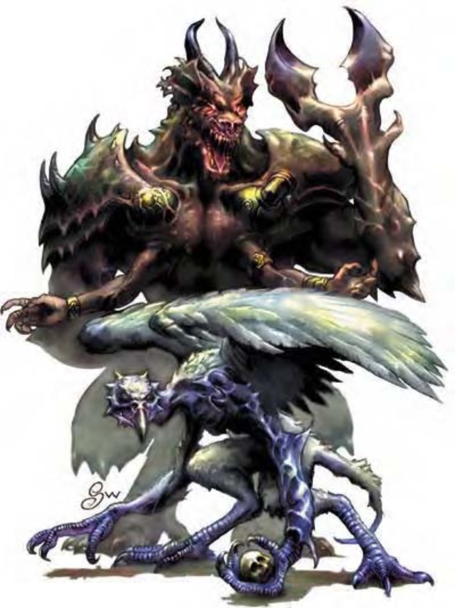

他们看起来像高壮人类与巨大秃鹰的混种。四肢肌肉结实有力，覆有灰色小羽毛。长脖子连接似秃鹰的头部，羽毛翅膀宽大。弗洛魔是更强大恶魔的守卫，也是深渊战争的飞行攻击部队。弗洛魔约8英尺高，约500磅重。
| 资料栏位 | 弗洛魔 (Vrock) 大型异界生物（混乱、外界、邪恶、塔那） |
|---|---|
| 生命骰 | 10d8+70 (115HP) |
| 先攻 | +2 |
| 速度 | 30英尺 (6格)、飞行50英尺 (普通) |
| 防御等级 | 22 (-1体型、+2敏捷、+11天生)、接触11、措手不及20 |
| 基本攻击/擒抱 | +10 / +20 |
| 攻击 | 爪抓+15近战 (2d6+6) |
| 全力攻击 | 2爪抓+15近战 (2d6+6) 及 啮咬+13近战 (1d8+3) 及 2勾爪+13近战 (1d6+3) |
| 占据/触及 | 10英尺 / 10英尺 |
| 特殊攻击 | 毁灭之舞、类法术能力、孢子、震慑嘶、“召唤塔那魔族” |
| 特殊能力 | 伤害减免10/善良、黑暗视觉60英尺、对电击与毒素免疫、强酸抗力10、寒冷抗力10、火焰抗力10、法术抗力17、心灵感应100英尺 |
| 豁免 | 强韧+14、反射+9、意志+10 |
| 属性 | 力量23、敏捷15、体质25、智力14、感知16、魅力16 |
| 技能 | 专注+20、交涉+5、躲藏+11、威吓+16、任一知识+15、聆听+24、潜行+15、搜索+15、察言观色+16、法术辨识+15、侦察+24、生存+3 (追踪+5) |
| 专长 | 顺势斩、战斗反射、多重攻击、猛力攻击 |
| 环境 | 无底深渊 |
| 组织 | 单独、成双、成队 (3-5) 或中队 (6-10) |
| 挑战级数 | 9 |
| 宝藏 | 标准 |
| 阵营 | 总是混乱邪恶 |
| 进化 | 11-14HD (大型) ; 15-30HD (超大型) |
| 等级修正值 | +8 |
弗洛魔是可怕的战士，喜欢从半空杀入敌阵，尽可能造成伤害。他们为战斗而欢跃，飞上天空，随即与许多带爪同伴加入战局。尽管拥有机动性的优势，但弗洛魔过于热爱战斗，经常与对手陷入近战。
在计算伤害减免时，弗洛魔的天生武器与持有武器都视为混乱阵营与邪恶阵营。
毁灭之舞（超自然）：要使用本能力，至少得有三个弗洛魔围成一圈，疯狂地跳歌唱。舞蹈3轮结束后，一波强大能量爆发，范围为半径100英尺。除了恶魔外，该范围内的生物均受到20d6点伤害（通过反射检定则伤害减半，DC=18）。震摄、麻痹或杀害弗洛魔之一即可中断该舞蹈。豁免DC的调整值与魅力调整值相同。
类法术能力：随意施展――“镜影术”、“心灵遥控”（DC=18）、“高等传送术”（自身加上50磅重物品）；每天1次――“英勇术”。施法者等级12。豁免DC的调整值与魅力调整值相同。
孢子（特异）：每3轮一次，弗洛魔可使用即时动作从躯体散发大量孢子。孢子对弗洛魔邻接生物自动造成1d8点伤害。然后孢子穿透对手皮肤开始生长，接下来10轮内每轮额外造成1d4点伤害。之后，对手即被一丛藤蔓包覆（藤蔓不会造成伤害，1d4天后枯萎）。法术“减缓毒性”可阻止孢子生长。法术“祝福术”、“中和毒性”、“移除疾病”可杀死孢子，泼洒一瓶圣水亦可。
震慑嘶（超自然）：每小时1次，弗洛魔可发出尖锐嘶声。半径30英尺范围内所有生物必须通过强韧检定（DC=22），否则即被震摄1轮。豁免DC的调整值与体质调整值相同。
“召唤塔那魔族”（类法术能力）：每天1次，弗洛魔可召唤2d10个怯魔或另一个弗洛魔，成功机率为35%。此能力等同于三级法术。
技能：弗洛魔在进行“聆听”、“侦察”检定时具有+8种族加值。